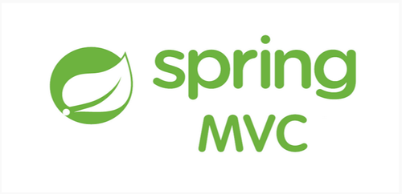
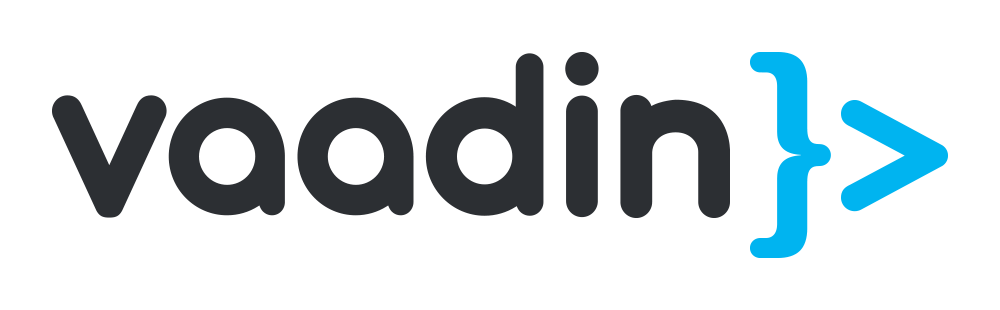

Vera Artanti,
Framework Java Terbaik untuk Aplikasi dan Pengembangan Web
Java adalah bahasa pemrograman yang dirilis oleh Sun Microsystems pada tahun 1990 sebagai bahasa open source dan kemudian diakuisisi oleh Oracle. Komunitas Java telah berkembang pesat sejak itu dan ada banyak frameworks Java yang telah tersedia dan menawarkan kesiapan untuk penggunaan library, komponen, abstraksi kode untuk menangani masalah keamanan, penerapan MVC dan banyak lagi. Singkatnya, penggunaan framework Java mempercepat proses pengembangan, menerapkan metode best practice, membuatnya menjadi lebih menyenangkan untuk dikerjakan dan membuat hidup lebih mudah bagi para developer. Terdapat frameworks untuk segala hal, termasuk juga frameworks untuk pengembangan aplikasi web, pengembangan aplikasi desktop, pengembangan aplikasi jaringan, pengembangan aplikasi seluler, API REST, deployment web services, pengembangan game dan pengembangan aplikasi perangkat lunak kelas enterprise. Frameworks yang berbeda bertujuan untuk memecahkan masalah yang berbeda dan sebagian besar developer mungkin saja akhirnya menggunakan beberapa frameworks dalam satu proyek tunggal. Berikut ini akan dibahas 7 Java Frameworks terbaik dan paling banyak digunakan di pasar yang mendukung pengembangan kecepatan, memiliki fitur yang kaya, populer di kalangan komunitas pengembang, dan berguna dalam menciptakan software aplikasi kompleks kelas kecil maupun besar.
Grails
Vera Artanti,
 Grails menggunakan bahasa Groovy Apache dan meningkatkan produktivitas development untuk membuat aplikasi web. Java library dan kelas business logic dapat langsung digunakan dalam Grails dan terintegrasi dengan mulus ke dalam alur kerja pengembangan Java anda, sekaligus melengkapi pengembangan web java.Yang biasanya dipakai adalah GGTS (Groovy/Grails Tool Suites). GGTS adalah Eclipse yang didalam sudah terinstall plug in Groovy dan Grails. Jadi kita tidak perlu install plug in tambahan.
Grails menggunakan bahasa Groovy Apache dan meningkatkan produktivitas development untuk membuat aplikasi web. Java library dan kelas business logic dapat langsung digunakan dalam Grails dan terintegrasi dengan mulus ke dalam alur kerja pengembangan Java anda, sekaligus melengkapi pengembangan web java.Yang biasanya dipakai adalah GGTS (Groovy/Grails Tool Suites). GGTS adalah Eclipse yang didalam sudah terinstall plug in Groovy dan Grails. Jadi kita tidak perlu install plug in tambahan.
Spring MVC
Vera Artanti,

Spring framework pertama kali dirilis kembali pada bulan Juni 2003 oleh Rod Johnson, sebagai framework open source di bawah Apache 2.0 License. Spring core didasarkan pada pemrograman berorientasi objek dan dilengkapi dengan dukungan dependency injection, pesan, aplikasi web, manajemen transaksi, pengujian dan banyak lagi. Pemrograman berorientasi objek dengan dependency injection inilah yang membuat Spring framework yang kuat untuk menciptakan aplikasi dengan menggunakan teknologi dan library pihak ketiga yang berbeda, sekaligus memberikan model pemrograman yang konsisten.
Vaadin
Vera Artanti,

Vaadin adalah salah satu framework yang paling kuat dan pertumbuhannya pesat dalam beberapa tahun terakhir. Kerangka Vaadin dapat digunakan untuk membuat situs web sederhana serta aplikasi web perusahaan yang sangat kompleks. Arsitektur Vaadin memungkinkan model server side development atau both client side. Model pengembangan server side-nya bersaing dengan Spring MVC dan ini adalah dua frameworks yang telah menggantikan Struts untuk waktu yang lama di masa lalu. Model server side menggunakan Ajax sebagai engine based client side . Model client side menggunakan Google's GWT untuk mengkompilasi kode Java ke JavaScript yang dikirim ke front end dan dieksekusi di browser. Salah satu bagian yang terbaik adalah anda dapat mencampur komponen yang dikembangkan dalm dua model di dalam satu proyek dan mendapatkan yang terbaik dari keduanya.